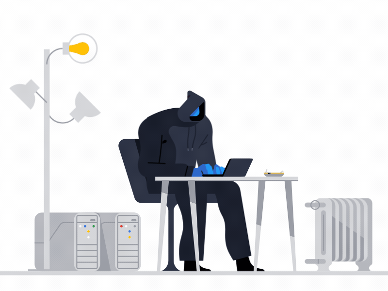
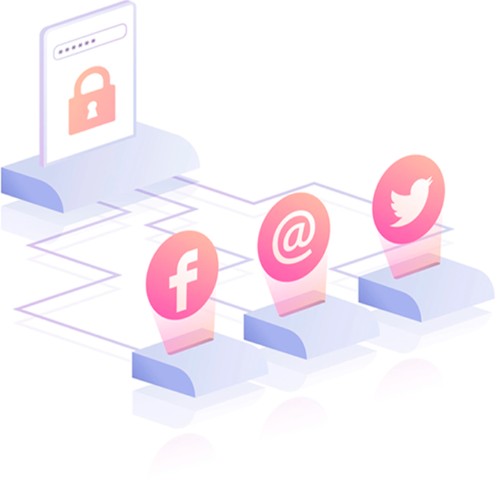

ПОЧЕМУ ПАРОЛЬНАЯ ЗАЩИТА ТАК ВАЖНА?
Со времен изобретения Интернета мир
сильно изменился. Сейчас, чтобы записаться в поликлинику,
заполнить документы или просто договориться о встрече,
достаточно нажать пару клавиш и отправить данные в глобальную сеть.
Почти каждый из нас имеет цифровые следы, которые успешно
используются злоумышленниками. За последние 50 лет мы придумали
множество способов обеспечить безопасность персональных данных:
от паролей до криптографических ключей.

К сожалению, способности хакеров так же не стоят на месте.
Сегодня в сети ведется настоящая цифровая война. Мы увеличиваем
защиту, а мошенники придумывают все более изощренные способы
ее обойти.
Каждый десятый аккаунт можно взломать простым перебором паролей,
а каждый пятый пользователь использует один пароль ко всем
ресурсам, что значительно упрощает работу злоумышленникам.
Подобная халатность со стороны пользователей и организаций
способна привести к глобальным последствиям.
